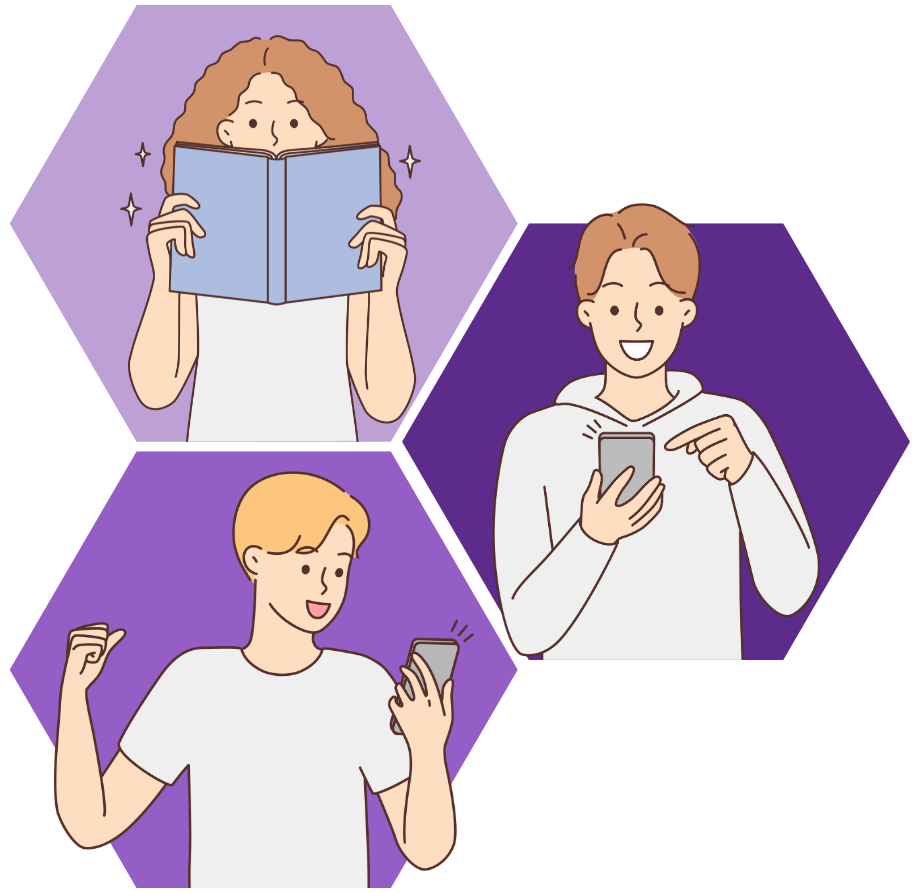
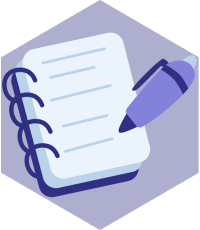
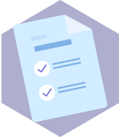
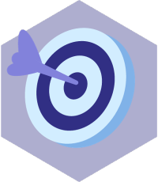
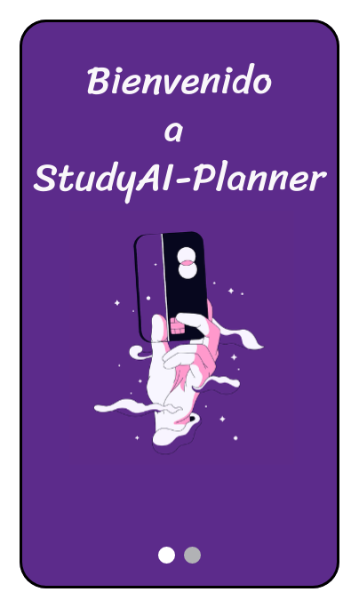
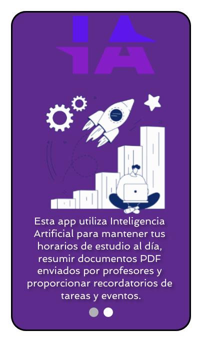
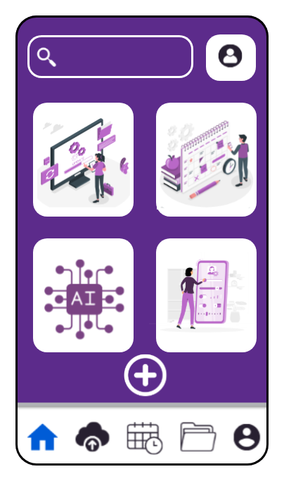
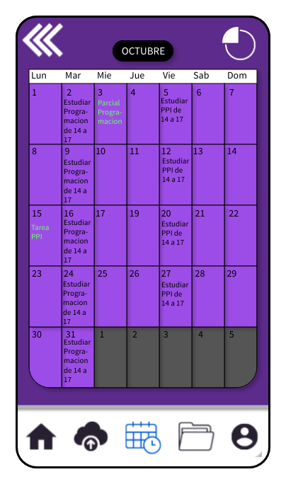
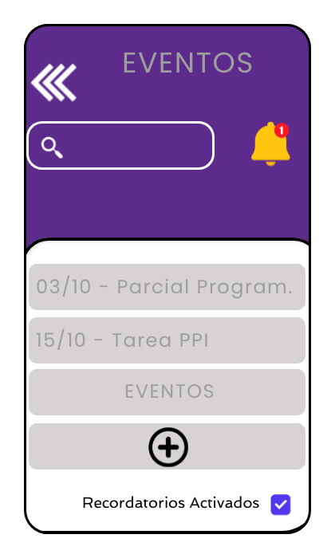

Queremos ayudarte a alcanzar
tus metas cada día
En nuestra búsqueda de mejorar la experiencia de los estudiantes en su viaje educativo, nos hemos embarcado en el desarrollo de una aplicación centrada en el usuario que tiene como objetivo primordial optimizar su gestión del tiempo. Ayudar a los estudiantes a organizar sus horarios, tareas, proyectos y actividades extracurriculares, permitiéndoles establecer recordatorios y establecer metas para un mejor manejo del tiempo.

productividad &
optimización.
Permite a los usuarios registrar sus horarios académicos, tareas pendientes, proyectos y actividades extracurriculares de una manera sencilla y personalizada. Cada usuario puede configurar su horario de acuerdo con sus clases, permitiendo una visualización clara de sus compromisos académicos en un formato que se adapta a sus preferencias.
Además de recordatorios y notificaciones que les ayuda a mantenerse al tanto de sus responsabilidades y plazos. Los usuarios pueden establecer recordatorios para tareas y proyectos específicos, lo que garantiza que no se les pase por alto ninguna tarea importante. También pueden establecer metas a largo plazo y plazos específicos para proyectos, lo que fomenta una planificación efectiva y una distribución equitativa del trabajo a lo largo del tiempo.
MEJORÁ TU VIDA ESTUDIANTIL
El usuario objetivo de esta app son los estudiantes. Sabemos que la vida de un estudiante suele ser ajetreada y llena de desafíos por lo que, sumándole su vida social y laboral, es común que a veces acaben con varios trabajos pendientes cerca de fechas de exámenes.
FUNCIONES DE LA APP
Planificación del horario de estudios:
Registro de tus clases, tareas y exámenes. Personalización de tus preferencias de estudio y metas.
Generación automática de un horario de estudio optimizado.

Gestión de archivos PDF:
Subida y almacenamiento de documentos PDF. Extracción de texto y metadatos de los PDF.

Resúmenes automatizados:
Procesamiento de PDF para resumir el contenido con ayuda de una IA. Opción de resumen basado en palabras clave o selección manual de partes relevantes.

Recordatorios y notificaciones:
Configuración de recordatorios para tareas, fechas límite y clases. Notificaciones push y correos electrónicos para mantener a los usuarios al tanto de sus actividades.
DISEÑO DE LA APP






Interfaz intuitiva y amigable en todas las plataformas.
La base de nuestra aplicación se encuentra en dispositivos móviles, como teléfonos y tabletas. Garantizando una amplia accesibilidad para todos los usuarios de dispositivos móviles.
Además, también ofreceremos una versión web de la aplicación que se podrá acceder desde navegadores de escritorio. Permitiendo que los estudiantes puedan planificar y gestionar su tiempo incluso cuando están frente a una computadora.